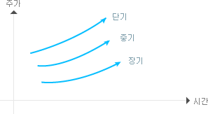

주식교실 ㅣ 기술적분석
주가이동평균 은 일정기간동안에 이루어진 주가의 연속적인 변동과정에서 일일변동과 같은 조작이 가능한 비정상적인 변동의 영향을 최대한 줄여서 전체주가의 흐름을 정상적인 상태로 유도하여 주가의 흐름을 가장 객관적으로 관찰할 수 있도록 평균화 하여 도표상에 옮겨 놓은 것이다.
- 강세장에서는 주가가 이동평균선 위에서 파동운동을 계속하면서 상승하는 것이 보통이다.
- 약세장에서는 주가가 이동평균선 아래에서 파동운동을 계속하면서 하락하는 것이 보통이다.
- 주가가 상승하고 있는 이동평균선을 하향돌파할 때는 조만간 반전하여 하락할 가능성이 크다.
- 주가가 하락하고 있는 이동평균선을 상향돌파할 때는 조만간 반전하여 상승할 가능성이 크다.
- 이동평균의 기준기간이 길면 길수록 이동평균선은 더욱 유연해 진다.
- 주가가 이동평균선으로부터 너무 멀리 떨어져 있을때는 회귀변화가 일어난다.
- 주가가 이동평균선을 돌파할 때는 매입 · 매도신호이다.
- 주가가 장기이동평균선을 돌파할 때는 주추세의 반전을 기대할 수 있다.
- 방향성
주가가 하락세에서 상승세로 전환할 경우: 먼저 단기 이동평균선이 상승하고 이어서 중기평균선 그리고 장기이동평균선이 상승한다.
주가가 승상세에서 하락세로 전환할 경우: 먼저 단기이동평균선이 하락하고, 이어서 중기 이동평균선 그리고 장기 이동 평균선이 하락한다.
- 배열도
- 정배열상태 : 주가가 하락세에서 상승세로 전환하여 상승추세의 모양을 갖추면 위로부터 현재주가, 단기이동평균선, 장기이동평균선의 순서를 이룬다.
- 역배열상태 : 주가가 하락추세에서 맨 위에 장기이동평균, 중기이동평균, 단기이동평균, 현재주가의 순서로 이룬다.
- 지지와 저항
주가가 상승할 경우 단기이동평균선, 중기이동평균선, 장기이동평균선을 지지선으로 상승하고, 하락할 경우 단기이동평균선, 중기이동평균선, 장기이동평균선을 차례로 이탈하게 된다.
예를 들어 20일 이동평균선이 30,000원이라면 20일 동안의 평균매매 단가가 30,000원이라는 것을 의미한다. 즉 현재주가가 30,000원 이하로 하락할 경우 그 동안의 매수자들은 평균적으로 손실을 입게 되므로 이 가격을 지키려고 노력하게 되고 여기에 지지선이 형성된다. 하락하던 주가가 반등하여 30,000원에 접근하면 투자원금수준에서 매도하려는 세력이 나타나므로 저항선이 형성된다.
- 크로스분석
단기이동평균선이 장기이동평균선을 상향돌파할 경우를 골든크로스 (goiden cross)라고 하여 매수신호로 보고, 단기이동평균선이 장기 이동 평균선을 하향돌파할 경우를 데드 크로스(dead cross)라고 하여 매도신호로 보는데 추세의 전환과는 시차가 존재한다.
주가가 이동평균선을 상향돌파하면 매수하고 주가가 이동평균선을 하향돌파하면 매도하는 방법이 일시적으로 존재한다.
단기이동평균선은 주가에 민감하고 시세전환을 빨리 나타내므로 매매시점 포착에 이용하고 중장기 이동평균선은 주가추세파악에 이용하는게 유리하다.
즉, 장기이동평균선과 단기 이동평균선이 교차하는 시점을 매매시점으로 삼거나, 주가가 장단기 이동평균선 위에 있을 경우를 매입시점, 그반대의 경우를 매도시점으로 본다.
상승추세의 투자전략
- 단기이동평균선이 중ㆍ장기이동평균선을 아래에서 위로 상향돌파할 때에는 매입신호이다.

- 위로부터 단기ㆍ중기ㆍ장기 이동평균선의 배열을 갖추면 강세국면이다.
- 중ㆍ장기 이동평균선의 상승이 계속된 후 단기이동평균이 하락세로 돌아서면 천정권으로 본다.
- 단기ㆍ중기ㆍ장기 이동평균선이 얽혀 있는 경우 매입을 보유하라는 신호로 본다.
하락추세시 투자전략
- 단기이동평균선이 위로부터 아래로 중ㆍ장기 이동평균선을 하향돌파할 때는 매도신호이다.
- 단기ㆍ중기ㆍ장기 이동평균선이 나란히 하락할 경우 약세시장이다.
- 중기ㆍ장기 이동평균선이 상당기간 진행된 후 단기이동평균선이 더 이상 하락하지 않고 상승세로 돌아서면 바닥원이다.
- 단기이동평균선이 중기ㆍ장기 이동평균선을 하향 돌파할 경우 데드 크로스로 강력한 약세전환신호이다.
매입신호
- 이동평균선이 하락한 뒤에 보합이나 상승국면으로 진입할 경우 주가가 이동평균선을 상향 돌파할 때는 매입신호
- 이동평균선이 상승하고 있을 때 주가가 이동평균선의 아래로 하락하는 경우 매입신호, 왜냐하면 이동평균선의 상승을 대세상등을 의미하므로 주가하락은 일시적인 가능성이 큼
- 주가가 이동평균선 위에서 급격히 하락하다가 이동평균선 부근에서 반등시 매입신호
- 주가가 하락하고 있는 이동평균선을 하향 돌파한 후 급락시는 이동평균선까지 반등가능성이 크므로 단기차익을 위한 매입신호
매도신호
- 이동평균이 상승한 후 평행 또는 하락 국면에서 주가가 이동평균선을 하향 돌파시 매도신호
- 이동평균선이 하락시 주가가 이동평균선 위로 상승하는 경우, 하락추세이므로 일시적인 주가상승으로 보아 매도신호
- 주가가 이동평균선 아래에서 상승세를 보이다가 상향돌파 못하고 하락하는 경우 매도신호
- 주가가 상승하고 있는 이동평균선을 상향 돌파한 후 다시 급등시, 이동평균선으로 자율반락가능성 있으므로 매도신호
삼선전환도는 주가가 상승에서 하락으로 또는 하락에서 상승으로 전환하는 시점을 포착하는데 널리 활용되는 기법입니다.
주가상승이 이전 하락선 3개를 상향돌파하는 경우에만 상승선을 표시하고 주가하락이 이전 상승선 3개를 하향 돌파하는 경우 하락선을 표시하여 이를 각각 상승 및 하락신호로 본다. 이 방법은 투자자에게 매입 및 매도신호를 분명히 제시해 주기 때문에 자동적으로 매매신호를 포착할 수 있다.
삼선전환도는 시간의 흐름을 무시하고 주가가 새로운 고점이나 저점을 형성할 때만 차트에 그린다. 즉 상승선이 계속될 때 계속 상승선을 그려 나가다가 주가가 하락한다고 하여 바로 하락선을 그리는 것이 아니라 그 이전의 상승선 3개에 해당하는 주가하락이 있을 때 비로소 하락선을 그리는데, 이때를 하락전환 또는 음(-)전환이라하여 매도신호로 본다.
반대로 하락선이 계속될 때는 이전의 하락선 3개에 해당하는 주가상승이 있을 때, 상승선을 그리는데, 이 때를 상승선환 또는 양(+)전환이라 하여 매수신호가 된다.
| 월일 |
주가(원) |
월일 |
주가(원) |
| 9.1 |
16,500 |
9.8 |
16,100 |
| 9.2 |
16,700 |
9.9 |
19,900 |
| 9.3 |
16,800 |
9.10 |
15,800 |
| 9.4 |
16,900 |
9.11 |
16,200 |
| 9.5 |
16,600 |
9.12 |
16,400 |
| 9.6 |
16,300 |
9.13 |
16,800 |
증권시장 주변상황의 불안 등으로 단시일내에 주가등락이 반복되는 경우에는 이용하기 부적합하다.
주가가 지속적으로 또는 상, 하한가와 같이 급격하게 변동하는 경우에도 부적합하다. 그것은 주가가 소폭 등락을 거듭하고 있을 때 갑작스런 변동은 그릇된 판단을 유발시킬 가능성이 있기 때문이다.